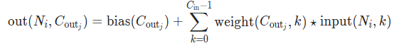

CNNベースの強化学習エージェントの行動精度がよくない（＝学習がうまく進まない、性能が出ない）場合、主な原因は以下のようなものが考えられます。
CNNベースの強化学習エージェントの精度が上がらない場合、
「入力前処理」「CNN構造」「ハイパーパラメータ」「報酬設計」「探索」「実装バグ」
のいずれかに問題があることが多いです。
まずは入力画像の可視化・学習曲線の確認・ハイパーパラメータの見直しから始めるのがおすすめです。
torch.nn.Conv2d(in_channels, out_channels, kernel_size, stride=1, padding=0, dilation=1, groups=1, bias=True, padding_mode='zeros', device=None, dtype=None)
In the simplest case, the output value of the layer with input size $(N, C_{in}, H, W)$ と出力 $(N, C_{out}, H_{out}, W_{out})$は簡単に以下のように示すことができる。 
# With square kernels and equal stride
m = nn.Conv2d(16, 33, 3, stride=2)
# non-square kernels and unequal stride and with padding
m = nn.Conv2d(16, 33, (3, 5), stride=(2, 1), padding=(4, 2))
# non-square kernels and unequal stride and with padding and dilation
m = nn.Conv2d(16, 33, (3, 5), stride=(2, 1), padding=(4, 2), dilation=(3, 1))
input = torch.randn(20, 16, 50, 100)
output = m(input)
CartPole-v1について確認すると。
https://github.com/lmarza/CartPole-CNN